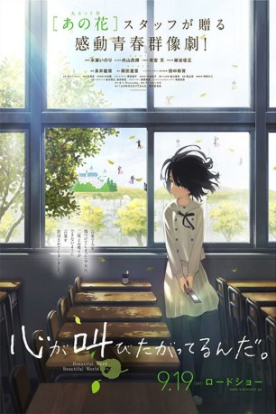

#4754 The Anthem of the Heart
 
 IMDB-Wertung: 7.4 / 10
IMDB-Wertung: 7.4 / 10  Metascore: 0
Metascore: 0 
Die Geschichte dreht sich um das Mädchen Jun, das früher mal sehr glücklich war. Durch eine unbedachte Äußerung in ihrer Kindheit, die unter anderem ihre Familie auseinandergerissen hat, lebt sie zurückgezogen und bekommt kaum Besuch. Zudem erschien eines Tages eine Fee vor ihr, von der sie sich wünschte, dass sie keine Leute mehr verletzen kann. Doch im Austausch wurde ihr ihre Fähigkeit zu reden genommen. Aber eines Tages hat ihr Alleinsein ein Ende, denn sie wurde nominiert, ein Mitglied der Community Outreach Council zu werden. Obendrein wird Jun auch noch zur Hauptrolle eines Musicals ernannt … Wie wird ihr Leben wohl weiter verlaufen und kann Jun tatsächlich wieder glücklich werden?
Jahr: 2015
Dauer: 119 Minuten
FSK: 6
Land: Japan Studio: Eleven ArtsTonspuren: DTS - ,
Untertitel: Deutsch,
Auflösung: 1080p (1920x1080) Größe: 4126 MB
Genre: Drama, Fantasy, Animation/Trick
Regisseur: Tatsuyuki Nagai
Drehbuch: Rob Burnett
Soundtrack:
Darsteller:
- Inori Minase als Jun Naruse
- Koki Uchiyama als Takumi Sakagami
- Sora Amamiya als Natsuki Nito
 Yoshimasa Hosoya als Daiki Tasaki
Yoshimasa Hosoya als Daiki Tasaki- Taishi Murata als Itsuki Mishima
- Rie Takahashi als Yoko Uno
- Shizuka Ishigami als Asuka Eda
- Takanori Ohyama als Motoki Aizawa
- Makoto Furukawa als Toshinori Iwaki
 Keiji Fujiwara als Kazuki Joshima
Keiji Fujiwara als Kazuki Joshima- Yô Yoshida als Izumi Naruse
- Eizô Tsuda als Yasohachi Sakagami
- Kiyoko Miyazawa als Shin Sakagami
- Hirofumi Nojima als Jun's Father
- Kengo Kawanishi als Kazuharu Yamaji
- Junichi Yanagita als Akitagawa
- Ayaka Suwa als Ishikawa
- Hiromichi Tezuka als Iwata
- Mariko Higashiuchi als Okada
- Ikumi Hayama als Odagiri
- Juri Kimura als Kabe
- Ai Kakuma als Kitamura
- Junya Enoki als Saito
- Kôhei Amasaki als Shibuya
- Ryûichi Kijima als Shimizu
- Masumi Tazawa als Suzuki
- Yurika Kubo als Takamura
- Shuichi Nishitani als Tanaka
- Ryôko Maekawa als Tochikura
- Seiichiro Yamashita als Nishikori
- Haruki Ishiya als Fukushima
- Yuna Yoshino als Mikami
- Marie Miyake als Watanabe
- Daiki Hamano als Mover
- Airi Ohtsu als Housewife
- Kaoru Mizuhara als Haruna
Datei: X:\Kinder Anime\Div Anime\Anthem of the Heart, The (2015, FSK6, 1920x1080).mkv seit 14.11.2016
Festplatte: Kinder-Filme+Trick
 Es gibt insgesamt 40 Filme in der Gruppe 'Kinder Anime\Div Anime'
Es gibt insgesamt 40 Filme in der Gruppe 'Kinder Anime\Div Anime'